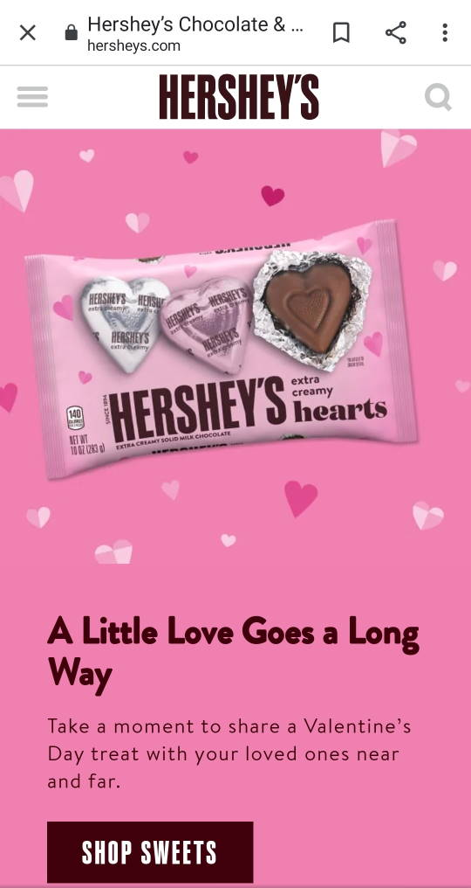

Visual Hierarchy
Adidas
adidas.com
On the Adidas homepage, the principle of visual hierarchy is used to accentuate one of their main product lines: shoes. The positioning and size of the shoe on the screen help draw the eye right to it first. The page is built to show the shoe first, then we are drawn to the headline right under it, then to the "shop" buttons. By emphasizing these elements, the page is able to quickly communicate "we sell shoes, especially these NMD shoes. BUY THEM!"
The visual hierarchy could be broken down as follows:
- The shoe image
- the headline
- the shop buttons
- the logos (right and top have similar visual weight)
White Space
Stack overflow
stackoverflow.com
Stack overflow uses whitespace carefully on their home page to enhance the readability of their site features and offers. This is especially important on mobile browsing. You can tell that attention was paid to margins and padding to produce very readable cards, and visually pleasing groupings of elements, such as the header and text, and the three content cards.
The white space is even, meaning there are no sloppy spots. It would look weird if the bottom card was closer to the middle card than the top card was. Because the whitespace here is sufficient, there is space between all content and edges, and extra space is used in the middle to create proximity, the site has a very clean and professional look.
Repetition
Hershey's chocolate
hersheys.com

Repetition is more than just repeating design choices like color. A strong sense of consistency across a brand page comes from proper use of repetition. Hersheys does it well here by repeating fonts and colors. The "SHOP SWEETS" button repeats the font of the logo, HERSHEYS at the top. The brown chocolatey color is repeated in the logo, the image, the button, and on other elements down the page. Since brand colors were repeated, the page has a consistent look and feel that people will associate with the brand.